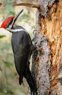

Woodpecker

Woodpeckers are distinctive birds known for their strong beaks and drumming behaviors.
Physical Characteristics
- Size: Woodpecker species vary in size, with some being as small as 3 inches and others reaching up to 20 inches in length.
- Beak: They have strong, chisel-like beaks that they use for drilling into wood to find insects and create nesting holes.
- Tail: Woodpeckers often have stiff tail feathers that help them balance while clinging to tree trunks and branches.
Behavior and Habitat
- Habitat: Woodpeckers are found in a variety of environments, including forests, woodlands, and urban areas.
- Drumming: They use their beaks to drum on trees, creating loud and distinctive sounds that serve as both communication and territory marking.
- Nesting: Woodpeckers excavate nesting holes in trees, which they line with wood chips. These holes are also used by other cavity-nesting birds.
Diet
Woodpeckers are omnivores, primarily feeding on insects and larvae that they find by pecking and drilling into tree bark.
Conservation Status
Many woodpecker species are considered to be of "Least Concern" in terms of conservation status. However, some populations may be affected by habitat loss and deforestation.
Interesting Facts
- Head Protection: Woodpeckers have adaptations to prevent brain injury while pecking, including a shock-absorbing skull and a specialized hyoid bone.
- Tongue Structure: Woodpeckers have long tongues that can be extended to reach insects hidden within tree crevices.
- Woodpecker Species: There are over 180 species of woodpeckers found worldwide, with various colors and patterns.